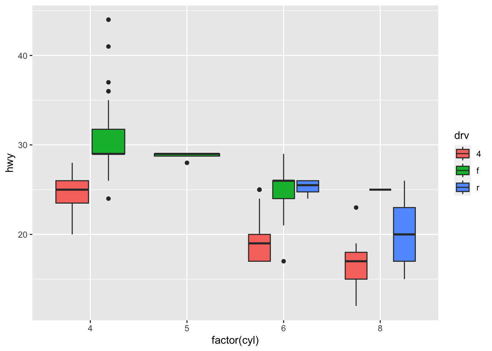
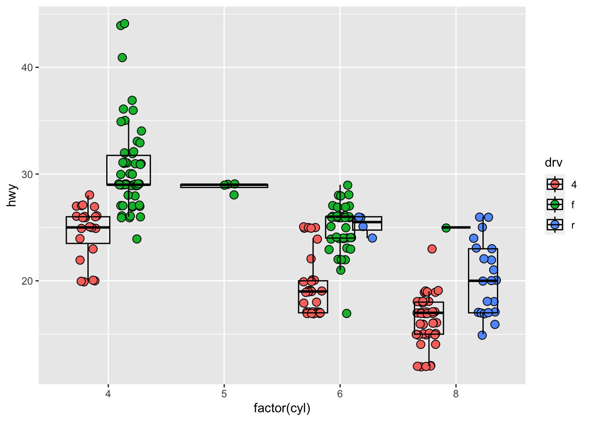
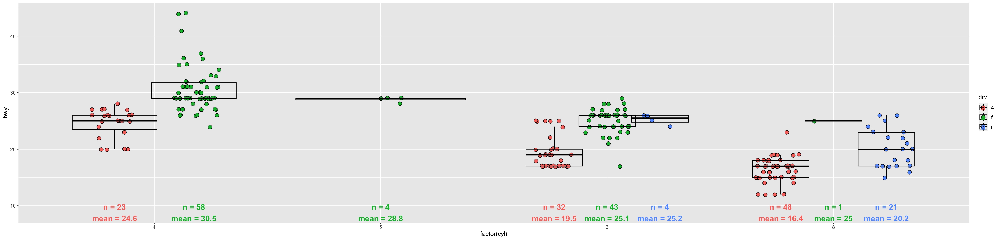

library(ggplot2)
p_base <-
ggplot(mpg,aes(factor(cyl), hwy,fill=drv)) +
geom_boxplot()
p_base
Adding diagnostics to plots for validating the data plotted
July 5, 2024
In my day job, every data point counts. A common objective is to visualize how an outcome or effect varies between groups of things. If the outcome varies, we posit that an a priori intervention or a mechanism may be driving the difference between things. Before generating statistics, a visual of group differences can be very persuasive.
Below is an example where we are plotting highway mileage between groups of cars by the number of cylinders and type of drive:
What is missing here is the individual cars making up the groups. A boxplot by itself tells us a 5 point summary, but people looking at a boxplot know that the distribution of data points in the plot can vary widely. Also, how do we know the groups we are comparing are valid groups to compare?

Seeing the data points gives us a new perspective: Whether many data points make up a group. Two boxplots may look similar, but the groups of data are not similar if only a few data points make up a boxplot. Also, we have a visual aide for the ‘tendency’ of the data in each group.
But we need one more thing, especially if we are dealing with small data. We need to verify that the plots capture all the data. One way to do this is to show the number of data points in each group. This can be tricky. But I have one solution taking advantage of the fact that we are using the {ggplot2} package for plotting.
Show the number of data points in a plot by extending {ggplot2}. We extend {ggplot2} by creating new stat and geom objects - these are the building blocks for the grammar of graphics provided by {ggplot2}. Below is an example:
StatCountLabel <- ggproto("StatCountLabel", Stat,
setup_params = function(data, params) {
stopifnot(is.null(params$ylower) |
is.numeric(params$ylower))
if(!(params$ylower>=0 & params$ylower<=1))
params$ylower <- 0.1
rng <- range(data$y,na.rm=TRUE)
params$ylower <- rng[1] - (diff(rng)*params$ylower)
params
},
compute_group = function(data, scales, ylower) {
data |>
dplyr::summarise(
label = paste0(
'n = ',length(y),
'\nmean = ',round(mean(y,na.rm=TRUE),1)
),
y = ylower,
.by = x
)
},
required_aes = c("x", "y")
)
stat_count_label <- function(mapping = NULL, data = NULL, geom = "text",
position = "dodge2", na.rm = FALSE, show.legend = NA,
inherit.aes = TRUE, ylower = NULL,...) {
ggplot2::layer(
stat = StatCountLabel, data = data, mapping = mapping, geom = geom,
position = position, show.legend = show.legend, inherit.aes = inherit.aes,
params = list(ylower = ylower, na.rm = na.rm, ...)
)
}
p_obs_n <-
p_obs +
stat_count_label(
aes(factor(cyl), hwy,color=drv),
fontface='bold',size=5,
ylower=0.1,position = position_dodge(width=.7)
)
p_obs_n
Now we have more information:
Some boxplots are made up of less than 5 data points and some are made of a few dozen data points. Do we have enough evidence to say anything about differences in groups with less than 5 data points?
There are many cars with the same highway mileage at the bottom and upper range of the group of cars with 4-wheel drive and 6 cylinders. Should we investigate those cars for reasons why they group together?
There’s other information not listed above, but we now have a lot more information by extending {ggplot2}. The more information we have, the more confident we are in making decisions from visualizations.